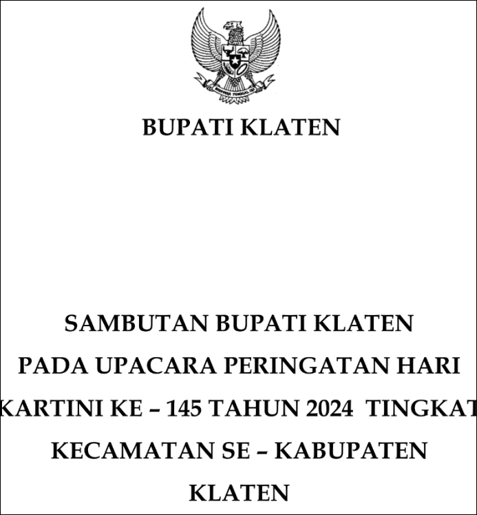

PEMERINTAH KABUPATEN KLATEN
Beranda
Berita
Data Covid
Data Hoax
Hari Jadi Klaten & HUT RI
Transparansi
Transparansi Perencanaan
Transparansi Anggaran
Profil
Profil Pimpinan Badan Publik
Sejarah Singkat
Lambang
Visi dan Misi
Tugas dan Fungsi Pemerintahan Kabupaten Klaten
Struktur Organisasi Pemerintahan Kabupaten Klaten
LHKPN dan LHKAN
Dewan Perwakilan Rakyat Daerah Kabupaten Klaten
Daftar Pejabat Stuktural Pemerintahan Kabupaten Klaten
Geografi & Topografi
Ekonomi
Sosial Budaya
Kabupaten Klaten Dalam Angka
Kecamatan Dalam Angka
Daftar Website Perangkat Daerah
Daftar Website Kecamatan
Datang & Kunjungi
Tempat Wisata Klaten
Galeri Wisata
Wisata Kuliner Klaten
UMKM
Kesenian
Kuliner
Pelayanan Publik
Hukum
Kependudukan
SAKURA (Sistem Layanan Administrasi Kependudukan Dalam Jaringan)
RSD Bagas Waras
Perijinan
Penelitian
Profil
Visi dan Misi
Struktur Organisasi
PERBUP PPID Utama
Daftar Informasi Publik
Informasi Publik Berkala
Informasi Publik Setiap Saat
Informasi Publik Serta Merta
Informasi Dikecualikan
Permohonan Informasi
Pengajuan Keberatan
E-LKHPN
Medsos PPID
Pengumuman
Galeri
Video
E-Doc
Download
Dokumen
Sambutan Bupati Klaten Pada Upacara Peringatan Hari Kartini Ke-145 Tahun 2024

Download